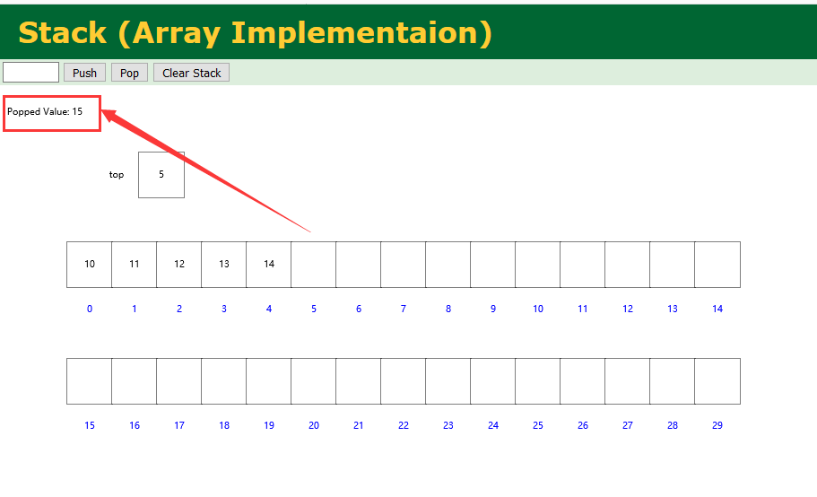
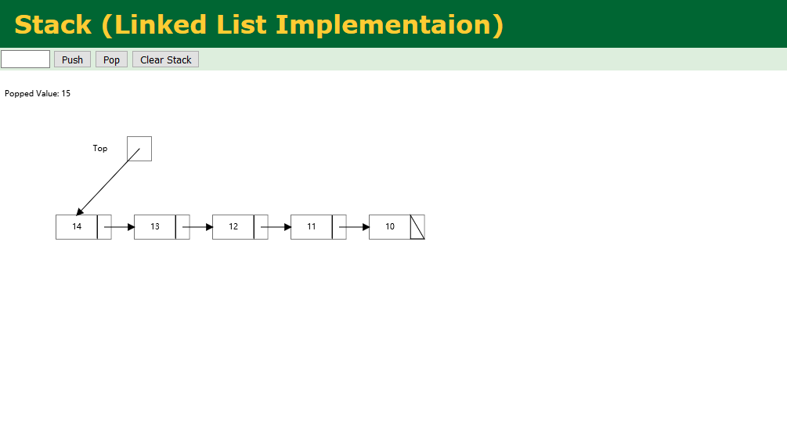

Stack and Queue
this page shows the structure and implementation of stack and queue, they are special list.
特殊的线性表：堆栈和队列
推荐一个数据结构可视化编辑网站 传送门：https://visualgo.net/en。
堆栈是只允许在栈顶进行插入删除操作的线性表，队列是只允许在队尾插入、队头删除的线性表。

图1：堆栈的顺式实现

图2：堆栈的链式实现
/////////////////////////////////////////////////////////////////////////////////////////////////////////////////////////////////////////////
堆栈的顺式实现：
#include
#include
#define Size 10
typedef struct seqstack {
int * head;//声明了一个名为head的长度不确定的数组，也叫“动态数组”
int top;//记录栈顶位置
int size;//记录堆栈分配的存储容量
}seqstack;
seqstack init() {
seqstack t;
t.head = (int*)malloc(Size*sizeof(int));
t.top = 0;
t.size = Size;
return t;
}
int push(seqstack *t, int e) {
if (t->top == t->size) {
t->head = (int)realloc(t->head, (t->size + 1)*sizeof(int));//改变head指向的内存空间大小
if (!t->head) {
printf("存储分配失败");
return 0;
}
t->size++;
}
t->head[t->top] = e;
t->top++;
return 1;
}
int pop(seqstack *t) {
if (t->top == 0) {
printf("堆栈已空");
return -1;
}
t->top--;
return t->head[t->top];
}
int size(seqstack *t) {
return t->top;
}
void display(seqstack *t) {
for (int i = t->top-1; i>=0; i--) {
printf("%d", t->head[i]);
}
printf("\n");
}
int main() {
seqstack t1 = init();
for (int i = 1; i <= Size; i++) {
push(&t1, i);
}
printf("原顺序表：\n");
display(&t1);
printf("出栈:");
int e = pop(&t1);
printf("%d\n", e);
printf("出栈后：\n");
display(&t1);
printf("将元素8入栈:\n");
push(&t1, 8);
display(&t1);
return 0;
}
堆栈的链式实现：
#include
#include
#define Size 10
typedef struct LinkStack {
int e;
struct LinkStack *next;
}LinkStack;
LinkStack * init() {
LinkStack *p = (LinkStack*)malloc(sizeof(LinkStack));
p->next = NULL;
return p;
}
int push(LinkStack *p, int e) {
LinkStack *m = (LinkStack*)malloc(sizeof(LinkStack));
m->e = e;
m->next = p->next;
p->next = m;
return 1;
}
int pop(LinkStack *p) {
LinkStack *m = p->next;
if (m == NULL) {
printf("堆栈已空");
return -1;
}
p->next = p->next->next;
int e = m->e;
free(m);
return e;
}
int size(LinkStack *p) {
LinkStack *m = p;
int size = 0;
while (m->next != NULL) {
m = m->next;
size++;
}
return size;
}
void display(LinkStack *p) {
LinkStack *m = p;
while (m->next != NULL) {
m = m->next;
printf("%d", m->e);
}
printf("\n");
}
int main() {
LinkStack *p = init();
for (int i = 1; i <= Size; i++) {
push(p, i);
}
printf("原顺序表：\n");
display(p);
printf("出栈:");
int e = pop(p);
printf("%d\n", e);
printf("出栈后：\n");
display(p);
printf("将元素8入栈:\n");
push(p, 8);
display(p);
return 0;
}
队列的顺式实现：
#include
#include
#define Size 10
typedef struct SeqQueue {
int * head;//声明了一个名为head的长度不确定的数组，也叫“动态数组”
int rear;//队尾指针
int front;//队头指针
int count;//计数器
int size;//记录堆栈分配的存储容量
}SeqQueue;
SeqQueue init() {
SeqQueue t;
t.head = (int*)malloc(Size*sizeof(int));
t.rear = 0;
t.front = 0;
t.count = 0;
t.size = Size;
return t;
}
int isEmpty(SeqQueue *t) {
return t->count == 0 ? 1 : 0;
}
int isFull(SeqQueue *t) {
return (t->count > 0 && t->rear == t->front) ? 1 : 0;
}
int offer(SeqQueue *t, int e) {
if(isFull(t) == 1){
t->head = (int)realloc(t->head, (t->size + 1)*sizeof(int));//改变head指向的内存空间大小
if (!t->head) {
printf("存储分配失败");
return 0;
}
t->rear = t->size;
t->size++;
}
t->head[t->rear] = e;
t->rear = (t->rear + 1) % t->size;
t->count++;
return 1;
}
int poll(SeqQueue *t) {
if (isEmpty(t) == 1) {
printf("队列已空");
return -1;
}
int e = t->head[t->front];
t->front = (t->front + 1) % t->size;
t->count--;
return e;
}
int size(SeqQueue *t) {
return t->size;
}
void display(SeqQueue *t) {
if (isEmpty(t) == 0) {
int i = t->front;
int c = 0;
while (c < t->count) {
printf("%d", t->head[i]);
i = (i + 1) % t->size;
c++;
}
printf("\n");
}
}
int main() {
SeqQueue t1 = init();
for (int i = 1; i <= Size; i++) {
offer(&t1, i);
}
printf("原顺序表：\n");
display(&t1);
printf("出栈:");
int e = poll(&t1);
printf("%d\n", e);
printf("出栈后：\n");
display(&t1);
printf("将元素8入栈:\n");
offer(&t1, 8);
display(&t1);
return 0;
}
队列的链式实现：
#include
#include
#define Size 10
typedef struct Node {
int e;
struct Node *next;
}Node;
typedef struct LinkQueue {
Node *front;//队头指针
Node *rear;//队尾指针
}LinkQueue;
LinkQueue * init() {
LinkQueue *p = (LinkQueue*)malloc(sizeof(LinkQueue));
p->front = NULL;
p->rear = NULL;
return p;
}
int offer(LinkQueue *p, int e) {
Node *m = (Node*)malloc(sizeof(Node));
m->e = e;
m->next = NULL;
if (p->rear != NULL) {
p->rear->next = m;
}
p->rear = m;
if (p->front == NULL) {//如果队头为空，需要修改队头
p->front = m;
}
return 1;
}
int poll(LinkQueue *p) {
if (p->front == NULL) {
printf("队列已空");
return -1;
}
Node *m = p->front;
int e = m->e;
p->front = p->front->next;
if (p->front == NULL) {//删除最后一个节点后，要置队尾为空
p->rear = NULL;
}
free(m);
return e;
}
int size(LinkQueue *p) {
Node *m = p->front;
int size = 0;
while (m != NULL) {
m = m->next;
size++;
}
return size;
}
void display(LinkQueue *p) {
Node *m = p->front;
while (m != NULL) {
printf("%d", m->e);
m = m->next;
}
printf("\n");
}
int main() {
LinkQueue *p = init();
for (int i = 1; i <= Size; i++) {
offer(p, i);
}
printf("原顺序表：\n");
display(p);
printf("出栈:");
int e = poll(p);
printf("%d\n", e);
printf("出栈后：\n");
display(p);
printf("将元素8入栈:\n");
offer(p, 8);
display(p);
return 0;
}